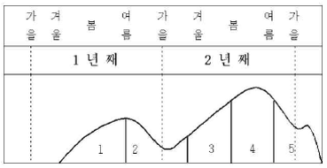

수산양식기사 (2006-08-06 기출문제)
1과목: 어류양식학
1. 뱀장어 양식장에서 발생하는 물변화 설명 중 틀린 것은?
- 물변화가 생기는 시기는 일반적으로 5~6월과 9월~10월이다.
- 수온이 17~20℃일 때에 자주 일어나는 경향이 있다.
- 물변화의 지속시간은 4~30일이다.
- 플랑크톤의 조성에 있어 동물 플랑크톤이 0.4~2.9%이다.
(정답률: 53%)

2. 가두리 양식장의 적지조건으로 가장 적합한 것은?
- 가두리 근방에 수초가 없고 부영양호인 곳
- 가두리내의 물의 순환과 DO 공급을 위해 풍랑이 심한 곳
- 일조시간이 짧고 수온이 따뜻한 곳
- 강우나 가뭄의 피해가 적고 교통과 동력시설이 편리한 곳
(정답률: 100%)
3. 틸라피아의 전 수컷 생산에 일반적으로 사용되는 약품은?
- estradiol-17β
- 17α-methyltestosterone
- sodium citrate
- Ethylaminobenzote
(정답률: 100%)
4. 천연산 복어(자주복)를 친어로 어획현장에서 인공채란하는 작업과정을 열거한 것 중 틀린 것은?
- 폴리에틸렌 용기에 5~10L의 해수를 넣고 난을 짜낸다.
- 수정난이 백탈될 정도로 정자를 가한다.
- 습식법으로 수정시킨다.
- 세란은 환수없이 1~2회만 실시한다.
(정답률: 73%)
5. 다음 중 방어의 성장 최적수온은?
- 8~12℃
- 13~18℃
- 18~25℃
- 28~32℃
(정답률: 82%)
6. 우리나라에서 냉수성 어류의 성장에 가장 적합한 조건을 갖춘 수온 및 수질 조건은?
- 연중 수온이 5~10℃로 유지되는 곳
- 수온 범위가 0~18℃인 계곡수를 이용할 수 있는 곳
- 수온 범위가 0~12℃인 하천수를 이용할 수 있는 곳
- 수온 범위가 12~18℃인 지하수를 이용할 수 있는 곳
(정답률: 87%)
7. 넙치 종묘생산을 하고자 할 때 기본적으로 알아야 할 산란 생태로 틀린 것은?
- 부화 기형물은 14℃에서 상대적으로 가장 낮다
- 자연에서의 부화 적정 수온은 14~19℃이다.
- 부화 후 변태 완료일수는 약 25~35일이다.
- 미수정란은 표면으로 부상한다.
(정답률: 74%)
8. 먹이생물이 갖추어야 할 조건이 아닌 것은?
- 적정한 크기 및 모양을 갖추어야 한다.
- 영양 성분이 확보되어야 한다.
- 대량 배양이 용이해야 한다.
- 빠른 운동성을 가져야 한다.
(정답률: 96%)
9. 어류의 사육에 있어서 식욕이 저하할 경우 성게류를 투입시켜 효과를 거둘 수 있는 어종은?
- 부시리
- 자치복
- 돌돔
- 은연어
(정답률: 69%)
10. 참돔의 양식에 있어서 먹이를 주는 방법으로 가장 좋은 것은?
- 조금씩 장시간 동안 수차에 걸쳐 자주 준다.
- 하루 중 아침과 저녁 무렵 2회에 걸쳐 준다.
- 매일 오전 10시 기준으로 그날 투입량을 한꺼번에 준다.
- 2~3일 안에 한번씩 대량으로 준다.
(정답률: 69%)
11. 다음 중 넙치의 육상 양식시 순간성장율을 최대로 할 수있는 적정 사육밀도는?
- 체표면적비 2배
- 체표면적비 3배
- 체표면적비 4배
- 체표면적비 6배
(정답률: 77%)
12. 조피볼락의 자어 사육시설 관리에 있어 자어의 안정을 유도하기 위하여 수조의 표층 조도로 가장 알맞은 것은?
- 50~100 lux
- 150~200 lux
- 250~300 lux
- 300~350 lux
(정답률: 93%)
13. 넙치종묘생산시에 넙치의 변태는 중요한 생리적 변화이다. 현재 18℃ 해수에서 종묘생산을 하고 있다면 변태가 끝나는 시기는 대략 며칠 후 인가?
- 약 1일
- 약 2일
- 약 3일
- 약 4일
(정답률: 31%)
14. 복원중(정확한 문제, 보기내용을 아시는분께서는 오류 신고를 통하여 문제, 보기 내용 작성 부탁드립니다. 문제 오류로 정답은 3번입니다.)
- 복원중
- 복원중
- 복원중
- 복원중
(정답률: 70%)
15. 해산어류에서 주로 요구되는 필수 지방산은?
- 리놀렌산(18:2n~6)
- 리놀렌산(18:3n~3)
- 아라키돈산(20:4n~6)
- 오메가-3 고도불포화지방산
(정답률: 92%)
16. 미꾸라지 인공채란 시 암컷의 선택 조건 중 틀린 것은?
- 복부가 적색을 띄고 투명감을 주는 것
- 복부가 미끄럽고 백색 반점이 있는 것
- 배가 부르고 약간 밑으로 쳐진 것
- 복부가 부드럽고 항문 부분이 빨간 것
(정답률: 85%)
17. 은어의 종묘생산시 부화 후 며칠간 로티퍼를 먹이는 것이 가장 적당한가?
- 약 20일간
- 약 50일간
- 약 70일간
- 약 100일간
(정답률: 70%)
18. 동양계 잉어가 봄이 되어 먹이를 찾기 시작하는 수온은?
- 8℃ 정도
- 10℃ 정도
- 13℃ 정도
- 15℃ 정도
(정답률: 50%)
19. 다음 중 은연어의 종묘생산에 필요한 사육 적정수온은?
- 8~10℃
- 10~12℃
- 13~18℃
- 20~22℃
(정답률: 83%)
20. 실뱀장어 소상에 관한 설명으로 옳지 않은 것은?
- 실뱀장어는 구름이 없는 맑은 날 밤에 많이 소상한다.
- 미풍일 때가 바람이 전혀 없을 때보다 소상량이 많다.
- 채포시기에 강우가 적어 연안으로 담수유입이 전혀없으면 소상량은 줄어든다.
- 밀물과 썰물의 차가 클때 소상량이 많아진다.
(정답률: 45%)
2과목: 무척추동물양식학
21. 성숙된 패류의 생식소 색이 틀리게 짝지어진 것은?
- 피조개의 암컷은 도홍색, 수컷은 담황색
- 비단가리비의 암컷은 선홍색, 수컷은 백색
- 전복의 암컷은 심녹색, 수컷은 담황색
- 개량조개의 암컷은 복숭아색, 수컷은 담녹색
(정답률: 45%)
22. 다음 고막류의 생식생태에 대한 설명으로 가장 적합한 것은?
- 고막류 중 성숙이 가장 빠른 종은 천해성인 고막으로서 7월 중에 대부분 산란을 마친다.
- 고막류의 난소나 정소의 색으로서 암컷과 수컷의 구분이 안된다.
- 큰이랑피조개와 피조개는 고막류 중에서 성숙기가 가장 빠르며, 6월에 산란을 마친다.
- 새고막의 산란기는 피조개에 비해 다소 늦어 10월이주 산란기이다.
(정답률: 77%)
23. 이매패류인 우럭의 종묘생산에서 양성까지의 설명 중 적절하지 못한 것은?
- 채묘는 완류식 시설로서 채묘하는 것이 효과적이다.
- 치패관리는 항상 해수 중에 잠기는 얕은 곳이 좋다.
- 양성장은 저질이 공기 중에 노출이 되지 않는 곳이 적합하다.
- 식해동물의 피해는 헌 그물을 덮어주면 효과를 볼 수 있다.
(정답률: 43%)
24. 우리나라 거제도 연안산 참담치의 주 산란기는?
- 11월
- 1월
- 3월
- 5월
(정답률: 74%)
25. 우리나라에서 많이 볼 수 있는 대합의 양성법은?
- 제방식
- 채롱식
- 조위망식
- 침설식 수하
(정답률: 84%)
26. 소라의 방류양성에 관한 내용으로 맞는 것은?
- 성장하면서 차차 얕은 곳으로 이동해 가면서 산다.
- 일반적으로 수온 13℃ 이하인 상태가 오래 지속되면 성장휴지대가 만들어진다.
- 성장 수온 기간이 긴 곳은 먹이 조달이 충분하지 못해 피해야 한다.
- 종묘의 방류량은 적어야 그 효과가 크다.
(정답률: 87%)
27. 소라의 산란 성기 수온은?
- 10~11℃
- 15~16℃
- 23~24℃
- 27~28℃
(정답률: 53%)
28. 서해안의 어청도나 동해안의 울릉도 연안에서 양식하기에 가장 알맞은 전복의 종류는?
- 시볼트 전복
- 까막 전복
- 말전복
- 참전복
(정답률: 80%)
29. 다음 중 닭새우 유생의 이름은?
- Nauplius
- Zoea
- Phyllosoma
- Megalopa
(정답률: 45%)
30. 우렁쉥이의 인공종묘생산에 관한 내용 중 틀린 것은?
- 체고 10cm 이상 되는 건강한 어미를 선정한다.
- 채란용 탱크와 사육용 탱크를 따로 준비해야 하며 1~2톤 이상이면 된다.
- 1~2톤 탱크인 경우 매 분 10~20L의 공기를 주입한다.
- 수온은 13~14℃로 일정하게 유지하는 것이 좋다.
(정답률: 62%)
31. 피조개 수하식양성에 대한 내용으로 가장 거리가 먼 것은?
- 양성장의 적지는 적조발생이 없는 곳으로 파도를 받지 않는 조용한 내만이다.
- 파도가 있는 곳에서 수하식으로 양성해야 할 경우에는 침설식 수하양성방법을 쓰는 것이 좋다.
- 수하식으로 양성하면 패각의 성장은 느리나 육질의 비만과 색채가 좋다.
- 수하식 단점을 보완하기 위해 수하식 양성 후 바닥 살포식으로 일정기간 양성하는 것이 좋다.
(정답률: 69%)
32. 우리나라 서해안에 있어 대하 월동장의 남쪽 한계는 북위 몇도 인가?
- 30도
- 34도
- 38도
- 40도
(정답률: 59%)
33. 다음 중 참굴의 산란 적정수온은?
- 13~16℃
- 17~20℃
- 22~25℃
- 26~28℃
(정답률: 53%)
34. 참담치의 산란임계 온도와 채란수온으로 맞는 것은?
- 6℃ 및 6~10℃
- 8℃ 및 10~14℃
- 10℃ 및 12~16℃
- 12℃ 및 14~18℃
(정답률: 58%)
35. 다음 중 문어의 사육밀도에 영향을 미치는 가장 큰 요인은?
- 용존산소량
- pH
- 수심
- 염분
(정답률: 74%)
36. 참가리비에 대한 설명으로 맞는 것은?
- 참가리비의 산란임계온도는 15℃이다.
- 성숙한 생식소는 암컷이 황백색, 수컷이 유백색이다.
- 한류계로서 부유유생 기간이 7일 정도이다.
- 우리나라 동해안에 주로 분포하며 수심이 20~35m되는 곳에 많이 서식한다.
(정답률: 48%)
37. 참가리비 채묘적기의 유생에 대한 설명 중 가장 거리가 먼 것은?
- 주 출현시기는 4월 하순에서 6월 하순경이다.
- 부유유생은 표층에 많고, 중층과 저층 사이에 적다.
- 유생의 출현기간은 굴보다 짧고, 육지에서 보다 멀리 떨어져 있다.
- 유생의 각장이 220~240㎛ 일때가 채묘 적기다.
(정답률: 62%)
38. 천해의 생태구역 중 수산생물의 양식장으로 이용되는 곳에 관한 설명으로 가장 타당한 것은?
- 양성장으로 이용되는 곳은 조간대, 상천해대, 중천해대 및 하천해대이다.
- 바닥양성장은 종류에 따라 조간대, 상천해대, 중천해대 중에서 선정된다.
- 나뭇가지, 탱크, 못 및 조위망 양성장은 주로 조간대, 상천해대에서 선정된다.
- 수하양성장은 조간대, 상천해대, 중천해대 중에서 성장된다.
(정답률: 54%)
39. 다음 비부착성 이매패류 중 초기 저서생활에서 족사를 전혀 사용하지 않는 종은?
- 대합
- 바지락
- 개량조개
- 우럭
(정답률: 43%)
40. 바지락 서식 적지에 대한 설명 중 맞는 것은?
- 육수의 영향을 받지 않는 파도가 조용한 내만
- 간출시간이 5시간 정도 되는 곳부터 수심 8~10m 사이
- 환원층의 발달이 많은 곳
- 태풍, 홍수 등에 의한 지반변동이 거의 없는 곳
(정답률: 73%)
3과목: 해조류양식학
41. 기존 건물을 이용하여 조가비 사상체를 배양할 때 어떤 건물이 좋은가?
- 북향건물
- 남향건물
- 동향건물
- 서향건물
(정답률: 75%)
42. 미역의 생장과 수온과의 관계를 설명한 사항 중 틀린 것은?
- 유주자의 방출과 착생은 17~20℃가 최적이다.
- 23~25℃에서 배우체의 암수구별이 뚜렷하고 서서히 생장한다.
- 유엽의 생장은 가을 15~17℃일 때가 가장 좋다.
- 5~10℃에서 성엽체의 생장이 양호하다.
(정답률: 69%)
43. 김 양식장에서 소비가 가장 많은 비료분은?
- 규산염
- 질산염
- 인산염
- 칼슘염
(정답률: 82%)
44. 천연 미역밭에서 미역과 경합관계에 있지 않은 것은?
- 대형 다년생 해조
- 암표생물
- 말잘피류
- 소형 다년생 해조
(정답률: 58%)
45. 카라기난의 원료가 되는 해조가 주로 속하는 식물군은?
- 홍조식물
- 남조식물
- 녹조식물
- 갈조식물
(정답률: 80%)
46. 미역 포자엽을 음건(그늘말리기) 한 후에 포자를 방출시키는 이유는?
- 자극에 의해 대량 방출시키기 위해
- 유주자의 착생율을 좋게 하기 위해
- 축적된 유주자를 단시간에 대량 방출시키기 위해
- 유주자의 운동성을 높이기 위해
(정답률: 71%)
47. 미역종묘 배양에 있어서 다음 중 처리방법이 가장 잘못된 것은?
- 초기에 온도상승과 함께 조도를 낮추어 준다.
- 1주일에 1회 채묘틀의 상하를 바꾸어 준다.
- 가을에 성숙을 촉진시키기 위해서 직사광선을 매일 쪼인다.
- 채묘 3~4일 후에 물갈이를 해준다.
(정답률: 88%)
48. 다시마 양성시 생장, 성숙촉진 및 끝녹음의 방지를 위한 주위조절 중 잘못된 것은?
- 가을에서 3월까지는 수면하 1m
- 봄의 4~5월에는 수면하 1.5m
- 초여름의 6~7월에는 수면하 2~2.5m
- 한여름의 8월에는 수면하 7~10m
(정답률: 85%)
49. 김의 각포자 방출에 있어서 억제효과가 있는 것은?
- 비중 1.035이하로 한다.
- 수온 27~28℃로 한다.
- 단일처리(명기 8시간, 암기 11시간)한다.
- 물갈이 처리를 한다.
(정답률: 50%)
50. 냉장김발의 이용목적으로 가장 거리가 먼 것은?
- 갯병대책
- 양식기간의 연장
- 해적생물의 구제
- 양식장의 입체적 이용
(정답률: 65%)
51. 다음 그림은 2년 양식 방법에 따른 다시마의 생장주기 곡선이다. 성숙시기를 나타내는 번호는?

- 1과 3
- 1과 4
- 2와 4
- 3과 5
(정답률: 60%)
52. 채묘 직후의 김발을 무노출 상태로 관리하는 주된 이유는?
- 직사광선을 피하기 위해
- 건조에 대한 저항력을 높이기 위해
- 광합성이 잘 되도록 하기 위해
- 영양염의 흡수가 잘되게 하기 위해
(정답률: 58%)
53. 다음 중 김 양식기간에 발생하는 갯병으로 병원균에 의한 것은?
- 흰갯병
- 싹갯병
- 붉은갯병
- 암종병
(정답률: 62%)
54. 양식초기에 김 갯병이 발생하기 가장 쉬운 조건은?
- 수온 22℃에서 비교적 장기간에 걸쳐 13℃로 하강할 때
- 수온 13℃이상으로 되는 시기가 비교적 빨리 올 때
- 수온 13~8℃의 기간이 비교적 길 때
- 수온 8~5℃의 기간이 비교적 길 때
(정답률: 69%)
55. 다시마의 상품가치가 되는 주된 기준은?
- 비대도
- 엽체 폭
- 엽장
- 엽목
(정답률: 69%)
56. 김이 단기간에는 빨리 흡수하나 고농도에서는 저해작용이 있는 질소원은?
- 암모니아태 질소
- 아질산태 질소
- 질산태 질소
- 요소
(정답률: 45%)
57. 다음 해조류 중 세대교번을 하지 않는 것은?
- 미역
- 감태
- 다시마
- 톳
(정답률: 73%)
58. 무기질 사상체가 조가비 사상체보다 채묘시기를 조절하기 용이한 주 이유는?
- 배양기간을 단축할 수 있으므로
- 환경조건의 변화에 더 민감하게 반응을 하므로
- 배양용기가 작아서 환경조절이 간단하므로
- 배양조건이 단순하므로
(정답률: 56%)
59. 다시마 양성관리에 관한 설명 중 틀린 것은?
- 시설장소는 조류가 다소 빠른 곳을 택한다.
- 저질은 자갈, 모래로 된 곳이 가장 좋다.
- 4~5월경에는 m 당 25~50개체가 되도록 솎아준다.
- 시설장소의 수심은 4~5m가 적합하다.
(정답률: 57%)
60. 톳의 번식방법이 아닌 것은?
- 포복지에 의한 번식
- 유성생식에 의한 번식
- 재생력에 의한 번식
- 유주자에 의한 번식
(정답률: 50%)
4과목: 양식장환경
61. 어류의 부레의 기능에 속하지 않는 것은?
- 삼투압 조절기능
- 정수기능
- 호흡기능
- 발음기능
(정답률: 28%)
62. 다음 어류 중 수명이 가장 긴 것은?
- 참돔
- 참조기
- 민어
- 숭어
(정답률: 16%)
63. 어류의 수염의 기능으로 옳은 것은?
- 미각과 후각
- 미각과 청각
- 미각과 촉각
- 후각과 촉각
(정답률: 43%)
64. 다음 동물 중 개방혈관계로 되어 있지 않는 동물은?
- 연체동물
- 절지동물
- 환형동물
- 극피동물
(정답률: 17%)
65. 다음 어류 중 턱이 없는 어류는?
- 원구류
- 경골어류
- 연골어류
- 판피류
(정답률: 65%)
66. 패류의 트로코포라(Trochophora)기에 해당되는 생활은?
- 부유생활
- 유영생활
- 저서생활
- 부착생활
(정답률: 55%)
67. 다음 성게 중 가장 심해성인 종류는?
- 보라성게
- 분홍성게
- 말똥성게
- 북쪽말똥성게
(정답률: 57%)
68. 갑각류 중 암컷의 가슴부위에 보육낭을 가지며, 유생은 보육낭속에서 모든 발생단계를 마친 후 성체와 비슷한 형태로 나오는 종은?
- 곤쟁이
- 따개비
- 갯가재
- 젓새우
(정답률: 35%)
69. 알의 동물극에 모자모양의 부착막을 가지고 있는 어류는?
- 멸치
- 잉어
- 날치
- 은어
(정답률: 11%)
70. 다음 중 수관부가 잘 발달되지 않은 종류는?
- 대합
- 바지락
- 피조개
- 우럭
(정답률: 37%)
71. 해조류 군락천이에서 입식순서가 옳게 연결된 것은?
- 파래→미역→감태
- 미역→파래→감태
- 감태→미역→파래
- 파래→감태→미역
(정답률: 32%)
72. 다음 절지동물 중 화석종만으로 구성된 동물군은?
- 바다거미류
- 삽엽충류
- 만각류
- 갑각류
(정답률: 50%)
73. 후발성 변태만을 하는 어종으로 맞는 것은?
- 가자미
- 개복치
- 넙치
- 당멸치
(정답률: 18%)
74. 다음 어류 중 빗비늘(otenoid scale)로 되어 있는 것은?
- 숭어, 농어
- 붕어, 뱀장어
- 철갑상어, 폐어류
- 상어, 가오리류
(정답률: 24%)
75. 회유에 관한 설명 중 가장 거리가 먼 것은?
- Leptocephalus의 이동은 유기회유이다.
- 우리나라 주변의 4~6월의 방어치어가 해류를 따라 북상하는 이동은 성육회유이다.
- 산란회유 중 연어의 경우 소하회유이다.
- 유기회유는 생활주기의 과정에서 나타는 회유이고, 색이회유는 발육단계의 과정에서 나타나는 회유이다.
(정답률: 34%)
76. 갈조류 중에서 체제의 분화가 가장 잘된 것은?
- 다시마목(Laminariales)
- 모자반목(Fucales)
- 산말목(Desmarestiales)
- 틱티오타목(Dictyotales)
(정답률: 36%)
77. 다음 중 장호흡을 하는 어류는?
- 뱀장어
- 미꾸라지
- 망둥어
- 짱뚱어
(정답률: 50%)
78. 경골어류의 특징 설명 중 틀린 것은?
- 양턱을 가지고 있다.
- 대부분의 종이 피부를 보호하는 비늘이 있다.
- 아가미는 1쌍이며, 아가미 뚜껑으로 덮여 있다.
- 염통은 1심방 1심실이다.
(정답률: 30%)
79. 다음 중 뱀장어 유생의 이름은?
- Auricualria
- Bipinnaria
- Leptocehalus
- Pluteus
(정답률: 47%)
80. 갈조류 포자낭에서 형성된 유주자의 핵상을 설명한 것 중 옳은 것은?
- 단자낭에서 형성된 유주자는 항상 복상이다.
- 복자낭에서 형성된 유주자는 항상 복상이다.
- 단자낭에서 형성된 유주자는 항상 단상이다.
- 복자장에서 형성된 유주자는 항상 단상이다.
(정답률: 41%)
5과목: 수산질병학
81. BOD 변동의 주 원인물질에 해당되는 것은?
- 호기성 미생물의 먹이가 되는 유기탄소 화합물
- 질소화합물
- 용존산소와 화합반응을 일으키는 Fe2+, SO~등의 화합물질
- 황토 부유물
(정답률: 72%)
82. 사육수 중의 병원균을 살균하기 위하여 자외선등을 사용한다. 이때 여과장치를 같이 사용하면 살균효과가 높아진다고 한다. 그 이유는?
- 병원균을 미리 제거하여 수를 줄이기 때문
- 용존물질을 제거하여 용존산소량이 높아지기 때문
- 부유물질을 제거하여 빛의 투과율이 높아지기 때문
- 여과장치를 통과하는 동안 수온이 상승하기 때문
(정답률: 53%)
83. 시료수 채취시 지켜야 할 기본적 사항 중 틀린 것은?
- 채취일시, 지점, 천기, 수심, 수위, 유량, 저질 등의 기록을 유지한다.
- 수질을 대표하는 시료가 채취되어야 한다.
- 경질유리나 폴리에틸렌제병을 시료수병으로 사용한다.
- 시료수를 담은 병은 고무나 코르크 마개를 한다.
(정답률: 44%)
84. 다음 중 개방적 양식에 속하지 않은 것은?
- 순환여과식 양식
- 수하식 양식
- 해상가두리식 양식
- 바닥식 양식
(정답률: 62%)
85. 공기 양수기에서 실용적인 최소 침수율은 대략 얼마인가?
- 40%
- 60%
- 80%
- 100%
(정답률: 79%)
86. 환경조건이 동일한 상태에서 다음 양식장을 같은 규모로 신설할 경우 어장노화를 가장 빨리 초래할 것으로 생각되는 양식방법은?
- 방어의 가두리양식
- 김의 뜬흘림발 양식
- 우렁쉥이 밧줄수하식 양식
- 피조개 바닥양식
(정답률: 56%)
87. 개방적 양식장에서 경합생물의 피해가 아닌 것은?
- 직접적인 식해
- 산소의 소모
- 먹이의 손실
- 착생장소의 점유
(정답률: 40%)
88. 양식장에서 볼 수 있는 황화수소의 작용에 대한 설명으로 가장 옳은 것은?
- 탄수화물의 축적이 많은 장소에서 발생한다.
- 물의 유통이 잘되는 장소에서 발생한다.
- 산소의 공급량이 증가하면 황화수소의 축적량도 늘어난다.
- 축적되면 저질의 색깔이 검어지면서 악취가 발생한다.
(정답률: 65%)
89. 다음 중 적조 발생에 미량금속이 자극요인으로 작용하기 위해서 가장 필요한 조건은?
- 고염분
- 저염분
- 고수온
- 유기물
(정답률: 44%)
90. BOD 측정용 시수의 pH는?
- 4.0
- 1.0
- 7.0
- pH에 관계없음
(정답률: 79%)
91. 지수양어지에서 수질변화 현상을 맞게 설명한 것은?
- 플랑크톤의 농도가 높으면 광선을 차단하기 때문에 전 수층이 균일한 온도 분포를 보인다.
- 상층부와 저층이 DO 량에 차이가 가장 심한 때는 하루 중 새벽 4시경이다.
- 식물플랑크톤의 번식으로 영양염류가 소비되어 빈영양상태가 된다.
- pH를 좌우하는 것은 수중 탄산염으로 동식물의 호흡과 광합성에 의해 변화한다.
(정답률: 44%)
92. COD를 가장 잘 설명한 것은?
- 유기물을 호기성 미생물 상태 하에서 분해시키는데 요구되는 산소량
- 유기물을 화학적으로 산화시킬때 요구되는 산소량
- 수중에 용존해 있는 산소량
- 수중의 탄소화합물을 질산화하는데 요구된 산소량
(정답률: 40%)
93. 식물플랑크톤 중 유해독소를 가지고 있어 적조를 일으키면 막대한 피해를 초래하는 적조생물은?
- 트리코데스윰
- 스켈레토네마
- 나비쿨라
- 김노디늄
(정답률: 56%)
94. 고형유기물의 빠른 제거는 사육수조 내의 좋은 수질 유지를 위하여 대단히 중요하다. 다음 중 이를 위해서 시설에 유의해야 할 점과 가장 거리가 먼 것은?
- 수조 바닥의 구배는 고형 유기물이 중앙배수구로 빨리 밀려갈 수 있는 정도로 충분하여야 한다.
- 주수구와 중앙배수구의 거리는 멀수록 좋다.
- 침전조의 유기 고형물이 모이는 곳은 될 수 있는 한물의 흐름이나 움직임이 없도록 해야 한다.
- 고형 유기물의 침전, 여과 장치의 배치는 사육조에서 배출 즉시 빠르게 제거할 수 있도록 하여야 한다.
(정답률: 53%)
95. 호수 내에서 조류(algae)가 많이 번성하면 pH 는 낮 동안 어떻게 변하는가?
- 일정하게 유지된다.
- 상승한다.
- 하강한다.
- 하강하다가 다시 상승한다.
(정답률: 67%)
96. 수하식 양식장에서 자가오염 현상을 가져오는 가장 큰 원인은?
- 배설물
- 해적생물
- 기생생물
- 식물플랑크톤
(정답률: 64%)
97. 폐쇄적 순환여과양식장에서 수질관리를 위한 3단계 과정을 순차적으로 나열한 것은?
- 기계적 여과 → 생물학적 여과 → 소독
- 생물학적 여과 → 기계적 여과 → 소독
- 생물학적 여과 → 소독 → 기계적 여과
- 기계적 여과 → 소독 → 생물학적 여과
(정답률: 69%)
98. 양어용수 중의 경도에 대한 설명으로 틀린 것은?
- 수중에 칼슘이나 마그네슘이 적게 함유된 물을 경수라고 한다.
- 어류의 건강에 가장 좋은 물의 경도는 45~90ppm (2.5~5도)이다.
- 경도가 너무 높으면, 물고기느 체색이 변한다.
- 녹조류가 이상적으로 번식하면 산소량이 저하되고 경도는 높게 된다.
(정답률: 43%)
99. 다음 중 양식장에서 발생하는 암모니아의 작용에 대하여 바르게 설명한 것은?
- 암모니아는 담수에서 그 독성이더 강해진다.
- 동물에 해로운 것은 이온화 되지 않은 암모니아다.
- 동물에서 배설될 때에는 대부분 NH4+의 형태이다.
- pH가 높아질수록 이온화된 암모니아의 비율이 높아진다.
(정답률: 48%)
100. 순환여과시스템의 순환수에서 생기는 거품은 주로 무엇 때문인가?
- 암모니아
- 이산화탄소
- 유분
- 유기물
(정답률: 64%)